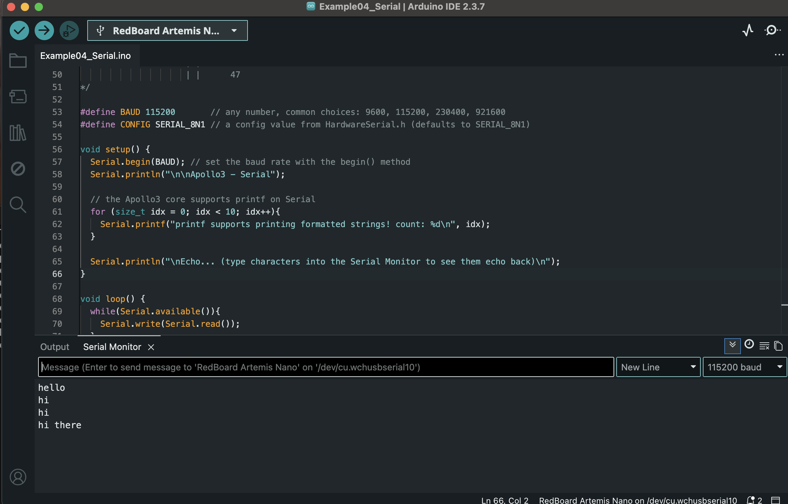
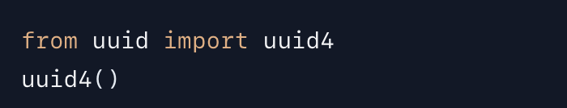
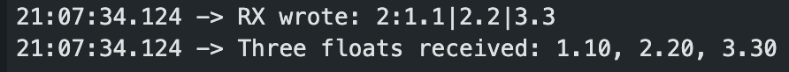
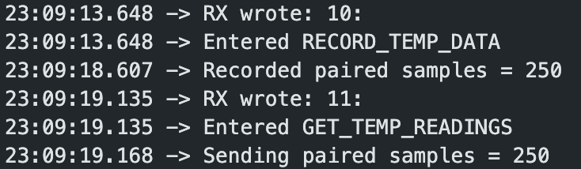
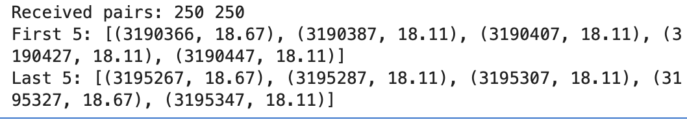

Lab 1: The Artemis board and Bluetooth
Artemis setup + BLE communication (Lab 1A and Lab 1B)
Lab 1A
Objective
The purpose of Lab 1A is to set up and become familiar with the Arduino IDE and the Artemis board.
Setup
The Arduino IDE and SparkFun Apollo3 board package were installed and updated on my local machine. The SparkFun RedBoard Artemis Nano was selected as the active board and successfully connected via USB. I verified correct operation using example sketches and confirmed that all inputs operate at 3.3 V logic.
Tasks
Task 1: Blink
A basic blink sketch was uploaded to verify correct board configuration and GPIO operation.
Task 2: Serial Communication
Serial communication was tested using the Arduino Serial Monitor and the board successfully transmitted formatted messages at the specified baud rate.
Task 3: Temperature Sensor
The onboard temperature sensor was read using analog input. Measured values changed in response to touch and ambient conditions as shown in the video.
Task 4: Microphone
The microphone was used to detect sound intensity and dominant frequency components, Changes in the output were observed when I change the frequency.
Task 5: Electric Tuning
I combined microphone readout with serial output to create a simplified electronic tuner. The program detected and reported different dominant frequencies in real time.
Conclusion
In this lab, I set up the Arduino IDE and learned how to use the Artemis Nano board. I tested basic functions such as blinking an LED, using the serial monitor, and reading data from the temperature sensor and microphone. This lab helped me understand the board and prepared me for later labs involving sensing and communication.
Lab 1B
Objective
The purpose of Lab 1B is to establish communication between computer and the Artemis board through the Bluetooth stack.
Prelab
Setup
The prelab prepared the laptop and RedBoard Artemis Nano for Bluetooth Low Energy (BLE) communication using the provided codebase. On the laptop, I set up a Python environment and installed the required BLE packages for the Jupyter notebooks.
I then uploaded ble_arduino.ino to the Artemis, which initializes the ArduinoBLE library and configures the board to advertise a BLE service.
After upload, the Artemis printed its BLE MAC address to the Serial Monitor (shown below), confirming that BLE was initialized and the board was discoverable.

Configuration
Before attempting a BLE connection, I configured the identifiers needed for the laptop to communicate with the correct Artemis board and BLE interface.
I generated a unique BLE service UUID in Python using uuid4(). This service UUID was then copied into both the Arduino sketch and the Python configuration file. Using a unique service UUID prevents conflicts with other students’ BLE devices in the lab.

The BLE service exposes three characteristics that define how data moves between the laptop and the Artemis:
TX_CMD_STRING: laptop → Artemis (write). Used to send command strings from Python.RX_STRING: Artemis → laptop (notify/read). Used for string replies and streamed data.RX_FLOAT: Artemis → laptop (notify/read). Used for numeric data.
These characteristic UUIDs are defined in Arduino sketch ble_arduino.ino so the Artemis advertises the expected BLE interface.
I then updated connection.yaml with the Artemis MAC address, service UUID, and characteristic UUIDs so the Python client could identify and connect to the correct BLE device.
Code Base
The provided BLE codebase consists of two main components: an Arduino sketch running on the Artemis (acting as a BLE peripheral) and a Python notebook/client running on the laptop (acting as a BLE central).
The Artemis advertises a BLE service and characteristics defined in ble_arduino.ino. The Python client reads the MAC address and UUID information from connection.yaml, initializes a BLE controller, and connects to the Artemis:
# Get Artemis BLE controller
ble = get_ble_controller()
# Connect to the Artemis device
ble.connect()Once the connection succeeded, the Arduino Serial Monitor printed the central device address (picture below), confirming that the laptop successfully connected to the Artemis over BLE.
After connecting, the laptop sends commands by writing to TX_CMD_STRING. The Artemis checks for incoming writes, parses the command, executes the corresponding handler, and returns results by writing to RX_STRING, which the laptop can read directly or receive asynchronously using BLE notifications.
Tasks
Task 1: ECHO Command
The goal of this task is to send a string from the laptop to the Artemis using the ECHO command, then read back an
“augmented” reply from the Artemis over the BLE string characteristic.
First, I sent a test payload From Python using:
ble.send_command(CMD.ECHO, "HiHello")
On the Artemis side, the command is received through the writeable command characteristic, parsed by
RobotCommand, and the string is extracted into char_arr. I then built
the response using EString and wrote it back to the BLE TX string characteristic.
Relevant Code Snippet (Arduino)
case ECHO:
char char_arr[MAX_MSG_SIZE];
success = robot_cmd.get_next_value(char_arr);
if (!success) return;
tx_estring_value.clear();
tx_estring_value.append("Robot says -> ");
tx_estring_value.append(char_arr);
tx_estring_value.append(" :)");
tx_characteristic_string.writeValue(tx_estring_value.c_str());
Serial.print("Echo reply: ");
Serial.println(tx_estring_value.c_str());
break;
After sending HiHello from Python, the laptop received the modified reply
Robot says -> HiHello :). The Serial Monitor also confirmed the command reception and the
generated reply.
Task 2: Send Three Floats
The goal of this task was to confirm that the BLE command channel can reliably transmit numeric values (floats) from the laptop to the Artemis, and that the Artemis can parse the payload into individual numbers.
First, I sent three floats using the SEND_THREE_FLOATS command.
The three values were packed into a single string and separated by the | delimiter
so the provided RobotCommand parser could tokenize them in order.
ble.send_command(CMD.SEND_THREE_FLOATS, "1.1|2.2|3.3")
On the Artemis side, the handler calls get_next_value() three times to extract the
floats sequentially and then prints them to the Serial Monitor to verify correct decoding.
Relevant Code Snippet (Arduino)
case SEND_THREE_FLOATS:
float f1, f2, f3;
success = robot_cmd.get_next_value(f1); if (!success) return;
success = robot_cmd.get_next_value(f2); if (!success) return;
success = robot_cmd.get_next_value(f3); if (!success) return;
Serial.print("Three floats received: ");
Serial.print(f1); Serial.print(", ");
Serial.print(f2); Serial.print(", ");
Serial.println(f3);
break;After running the command, the Serial Monitor showed both the received command payload and the parsed float values, confirming that the message was delivered over BLE and decoded correctly.
Task 3: GET_TIME_MILLIS
The goal of this task was to make the Artemis return its current timestamp back to the laptop as a formatted string.
From Python, I triggered the GET_TIME_MILLIS command, then immediately read back the response
string from the Artemis using the BLE string characteristic. The expected format is T:<millis>.
ble.send_command(CMD.GET_TIME_MILLIS, "")
s = ble.receive_string(ble.uuid['RX_STRING'])
print("Python received:", s)
On the Artemis side, the command handler calls millis() to get the current time (ms),
builds a string with the prefix T:, then writes it to the BLE TX string characteristic
so the laptop can read it.
Relevant Code Snippet (Arduino)
case GET_TIME_MILLIS: {
unsigned long t = millis();
tx_estring_value.clear();
tx_estring_value.append("T:");
tx_estring_value.append((int)t);
tx_characteristic_string.writeValue(tx_estring_value.c_str());
Serial.print("Sent time: ");
Serial.println(t);
break;
}After sending the command, the laptop received a timestamp string in the expected format. The Arduino Serial Monitor also printed the same timestamp, confirming the value sent over BLE.
Task 4: Notification Handler
In this task, I implemented a BLE notification handler in Python to receive string data from the Artemis asynchronously, without explicitly requesting each message.
On the Python side, I subscribed to the RX_STRING BLE characteristic.
Whenever the Artemis writes a new string value, the notification handler is automatically
invoked.
Python Notification Handler
times_ms = []
def notif_handler(uuid, byte_array):
msg = ble.bytearray_to_string(byte_array).strip()
if msg.startswith("T:"):
times_ms.append(int(msg[2:]))
ble.start_notify(ble.uuid['RX_STRING'], notif_handler)
The handler converts the incoming BLE bytes into a string, checks for the
T:<millis> format, and extracts the timestamp value.
These timestamps are stored for later analysis.
Task 5: Time Streaming and Data Rate
In this task, I measured how fast the Artemis can stream data to the laptop using Bluetooth Low Energy notifications. The Artemis continuously sent timestamp values for a fixed duration, while the laptop collected and analyzed the data asynchronously using the notification handler from Task 4.
From Python, I triggered the streaming behavior and collected the received timestamps for several seconds:
Python Code Snippet
import asyncio
times_ms.clear()
ble.send_command(CMD.GET_TIME_RATE, "")
await asyncio.sleep(6.0)
print("Messages received:", len(times_ms))
print("First 5:", times_ms[:5])
print("Last 5:", times_ms[-5:])
On the Artemis side, the GET_TIME_RATE command sends the current time
(in milliseconds) at a fixed interval using BLE notifications. The loop runs for
approximately 5 seconds and throttles transmissions to avoid overwhelming the
BLE stack.
Arduino Code Snippet
case GET_TIME_RATE:
{
unsigned long start_ms = millis();
unsigned long next_send_ms = start_ms;
const unsigned long SEND_PERIOD_MS = 20;
while (millis() - start_ms < 5000) {
BLE.poll();
unsigned long now = millis();
if (now >= next_send_ms) {
tx_estring_value.clear();
tx_estring_value.append("T:");
tx_estring_value.append((int)now);
tx_characteristic_string.writeValue(
tx_estring_value.c_str()
);
next_send_ms = now + SEND_PERIOD_MS;
}
}
break;
}
During one run, the Python client received 207 timestamp messages. The first and last timestamps were:
- First timestamp:
50465 ms - Last timestamp:
55456 ms
This corresponds to a total streaming duration of:
55456 − 50465 = 4991 ms ≈ 4.99 s
The effective message rate was:
207 messages / 4.99 s ≈ 41.5 messages per second
Each message had the format "T:xxxxx", which is approximately
7 bytes per message. The effective BLE payload throughput was therefore:
41.5 messages/s × 7 bytes ≈ 290 bytes/s ≈ 0.28 KiB/s
Task 6: Time Storage
The objective of this task was to store time stamp data locally on the Artemis using a global buffer, then transmit the buffered data to the laptop in a single batch. This approach avoids continuous streaming and allows verification that all recorded data points were successfully transferred over BLE.
On the Artemis side, I created a global array to store time stamps along with a counter to track how many values were recorded. When the RECORD_TIME_DATA command is received, the Artemis records millis() values for a fixed duration or until the buffer is full. These values are stored locally without being sent immediately.
After recording is complete, the SEND_TIME_DATA command iterates through the buffer and sends each stored time stamp to the laptop as a string prefixed with T:. Once all values are transmitted, the Artemis sends a DONE message to signal completion.
case RECORD_TIME_DATA:
{
time_count = 0;
unsigned long start_ms = millis();
while ((millis() - start_ms < 5000) && (time_count < TIME_BUF_LEN)) {
BLE.poll();
time_buf[time_count++] = millis();
}
Serial.print("Recorded count = ");
Serial.println(time_count);
break;
}
case SEND_TIME_DATA:
{
Serial.print("Sending count = ");
Serial.println(time_count);
for (int i = 0; i < time_count; i++) {
BLE.poll();
tx_estring_value.clear();
tx_estring_value.append("T:");
tx_estring_value.append((int)time_buf[i]);
tx_characteristic_string.writeValue(tx_estring_value.c_str());
delay(5);
}
tx_estring_value.clear();
tx_estring_value.append("DONE");
tx_characteristic_string.writeValue(tx_estring_value.c_str());
Serial.println("Sent DONE");
break;
}
Buffered Notification Handler (Python)
On the Python side, I used a buffered BLE notification handler to receive the burst of messages asynchronously. Incoming time values were appended to a list, and a completion event was triggered once the DONE message was received.
on notification received:
convert BLE bytes to string
if message starts with "T:":
parse time and append to list
if message == "DONE":
mark transfer complete
After issuing the RECORD_TIME_DATA command and allowing the buffer to fill, I sent the SEND_TIME_DATA command from Python. The laptop successfully received all buffered time values followed by the DONE message.
Task 7: Buffered Time + Temperature Pairs
The objective of this task was to record paired time stamps and temperature readings on the Artemis using two same-length global arrays. Each index in the arrays corresponds to one sample (i.e., time_buf[i] was recorded at the same moment as temp_buf[i]). After recording, the Artemis sends the paired data back to the laptop, and the Python notification handler parses each packet into two lists.
I added a second global buffer (temp_buf) with the same length as the time buffer. The command RECORD_TEMP_DATA records both millis() and read_temp_c() at approximately 50 Hz for 5 seconds (or until the buffer is full).
case RECORD_TEMP_DATA: {
Serial.println("Entered RECORD_TEMP_DATA");
time_count = 0;
unsigned long start_ms = millis();
while (((millis() - start_ms) < 5000) && (time_count < TIME_BUF_LEN)) {
BLE.poll();
time_buf[time_count] = millis();
temp_buf[time_count] = read_temp_c();
time_count++;
delay(20); // ~50 Hz
}
Serial.print("Recorded paired samples = ");
Serial.println(time_count);
break;
}
The command GET_TEMP_READINGS then iterates through both arrays and sends each paired sample as a single formatted string:
D:<time_ms>,<temp_x100>. After all samples are sent, the Artemis transmits a DONE message.
case GET_TEMP_READINGS: {
Serial.println("Entered GET_TEMP_READINGS");
Serial.print("Sending paired samples = ");
Serial.println(time_count);
char out[64];
for (int i = 0; i < time_count; i++) {
BLE.poll();
long temp_c_x100 = (long)(temp_buf[i] * 100.0f);
snprintf(out, sizeof(out), "D:%lu,%ld", time_buf[i], temp_c_x100);
tx_characteristic_string.writeValue(out);
delay(5);
}
tx_characteristic_string.writeValue("DONE");
delay(20);
tx_characteristic_string.writeValue("DONE");
delay(20);
tx_characteristic_string.writeValue("DONE");
break;
}
Buffered Notification Handler (Python)
On the Python side, I registered a notification handler that listens for incoming strings. Each data packet begins with D: and contains a comma-separated time stamp and temperature value scaled by 100. The handler parses these messages and appends values into two lists (t_list and temp_list). Once a DONE message is received, the transfer is treated as complete.
on notification received:
convert BLE bytes to string
if message starts with "D:":
parse time_ms and temp_x100
t_list.append(time_ms)
temp_list.append(temp_x100 / 100)
if message == "DONE":
mark transfer complete
After recording data for ~5 seconds and requesting the paired readings, the laptop received the same number of time stamps and temperature values, confirming that the data remained aligned by index.
 Task 8: Real-Time Streaming vs Buffered Data Transfer
In this lab, I explored two different ways of sending data from the Artemis to my laptop: sending data in real time as it is generated, and storing data locally on the Artemis before sending it all at once. Each approach has different advantages depending on the situation.
Real-Time Streaming
With real-time streaming, the Artemis sends each data point over BLE immediately after it is recorded. This makes it possible to observe the system state live from the laptop, which can be useful for debugging, visualization, or applications that require immediate feedback.
The main drawback is that BLE communication is relatively slow. From Task 5, I measured an effective rate of about 41.5 messages per second, corresponding to roughly 0.28 KiB/s of data throughput. Because each data point is sent individually, the BLE overhead limits how fast data can be streamed and reduces the achievable sampling rate.
Buffered Data Collection and Transfer
In the buffered approach, data is first stored in arrays on the Artemis and only transmitted after data collection is complete. This separates data recording from BLE communication.
This method allows the Artemis to record data much faster than it can send it over BLE. In Tasks 6 and 7, the board recorded timestamped data at approximately 50 Hz, which was limited by loop timing and sensor delays rather than BLE throughput. Once recording finished, the stored data was sent efficiently in a batch.
The main disadvantage of this approach is that the data is not available in real time and that the amount of data that can be recorded is limited by the board’s memory. However, it is well suited for data logging and offline analysis where higher resolution is required.
Recording Speed Comparison
Comparing the two methods, buffered recording is significantly faster than real-time streaming. While BLE streaming achieved about 41.5 messages per second, buffered recording captured data at approximately 50 samples per second without being constrained by BLE communication. This shows that separating data acquisition from data transfer allows for higher sampling rates.
Memory Limitations
The Artemis board has 384 kB (393,216 bytes) of RAM. In Task 7, each stored data point consisted of a timestamp and a temperature reading:
- Timestamp (
unsigned long): 4 bytes - Temperature (
float): 4 bytes
This results in 8 bytes per data point. Ignoring memory used by the program and stack, the theoretical maximum number of stored data points is:
393,216 bytes / 8 bytes ≈ 49,000 data points
In practice, fewer samples can be stored due to memory used by the BLE stack and other variables, but this still allows tens of thousands of samples to be recorded before transmission.
Overall, I think real-time streaming is more useful for live monitoring and feedback, while buffered data transfer is better for collecting high-resolution data for later analysis.
Task 9: Effective Data Rate and BLE Overhead
I measured round-trip time and effective payload throughput for two reply sizes: a small 5-byte message and a larger 120-byte message. Each command was sent repeatedly from Python, and the response time was measured using BLE notifications.
Arduino Implementation
case REPLY_5B:
tx_characteristic_string.writeValue("ABCDE");
break;
case REPLY_120B:
static char msg[121];
memset(msg, 'A', 120);
msg[120] = '\0';
tx_characteristic_string.writeValue(msg);
break;
Python Measurement (condensed)
# handler timestamps replies
def on_rx(uuid, b):
rx_q.put_nowait((time.perf_counter_ns(),
len(ble.bytearray_to_string(b))))
ble.start_notify(ble.uuid["RX_STRING"], on_rx)
async def bench(cmd, nbytes, N=200):
rtt, rate = [], []
for _ in range(N):
while not rx_q.empty(): rx_q.get_nowait()
t0 = time.perf_counter_ns()
ble.send_command(cmd, "")
t1, _ = await rx_q.get()
dt = (t1 - t0)/1e6
rtt.append(dt)
rate.append((nbytes/(dt/1000))/1024)
return np.mean(rtt), np.mean(rate)
rtt5, rate5 = await bench(CMD.REPLY_5B, 5)
rtt120, rate120 = await bench(CMD.REPLY_120B, 120)Results
- 5-byte reply: RTT ≈ 89.0 ms, rate ≈ 0.056 KiB/s
- 120-byte reply: RTT ≈ 92.9 ms, rate ≈ 1.29 KiB/s
From the result, we can see that RTT was nearly the same for both payload sizes, indicating that BLE communication is dominated by fixed overhead rather than payload length. Small packets suffer heavily from this overhead, resulting in very low effective throughput. Larger replies significantly reduce overhead per byte and achieve much higher data rates.
Task 10: Reliability at High Data Rates
When the Artemis sends data at a higher rate, the computer does not reliably receive every message. As the transmission rate increases, BLE notifications begin to drop packets instead of buffering them.
This behavior was observed during real-time streaming (Task 5), where fewer samples were received than expected over a fixed time window. In contrast, when data was first stored on the Artemis and then sent afterward (Tasks 6 and 7), all samples were consistently received, as confirmed by matching counts and DONE markers.
BLE notifications are not guaranteed-delivery messages. If the Artemis publishes data faster than the Python client can process it, older messages are lost.
In summary, real-time streaming over BLE becomes unreliable at high data rates, while buffered data transfer is much more robust and should be used when complete data collection is required.
Conclusion